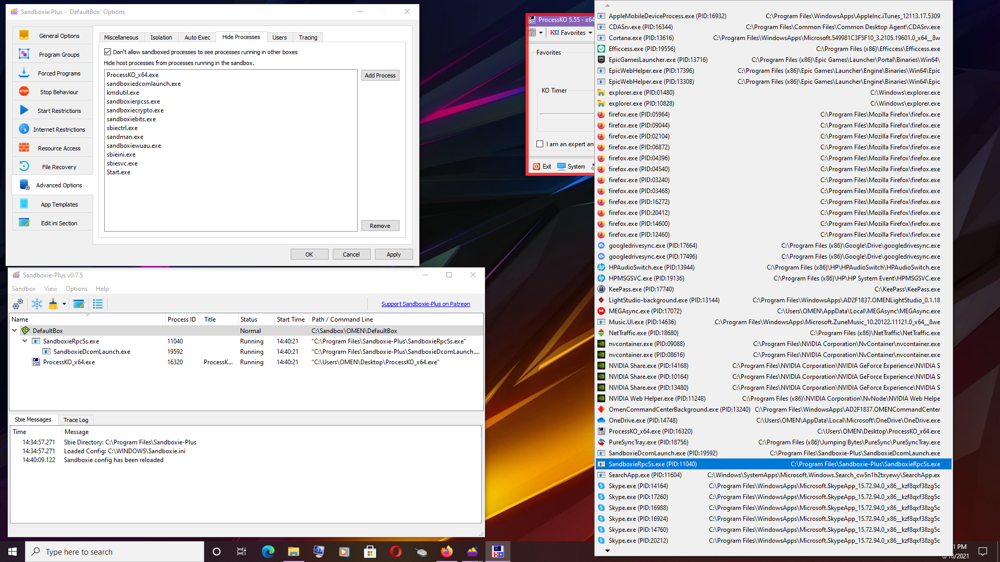
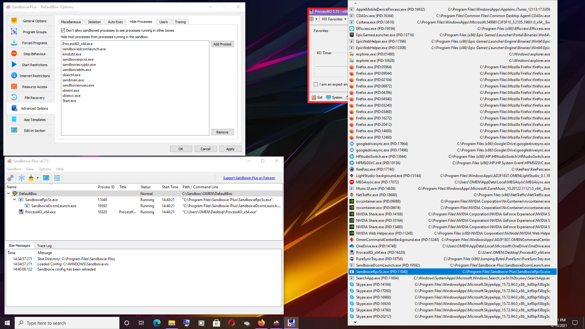

'Hide Processes' feature not working?
Posted: Thu Jun 10, 2021 11:48 am
Hi.
I tried to tinker with some sandbox settings and found out that the 'Hide processes' feature may not work as expected.
Here is a screenshot of what I found:

Do you think this is a bug? Or expected behavior?
Thank you!
I tried to tinker with some sandbox settings and found out that the 'Hide processes' feature may not work as expected.
Here is a screenshot of what I found:

Do you think this is a bug? Or expected behavior?
Thank you!